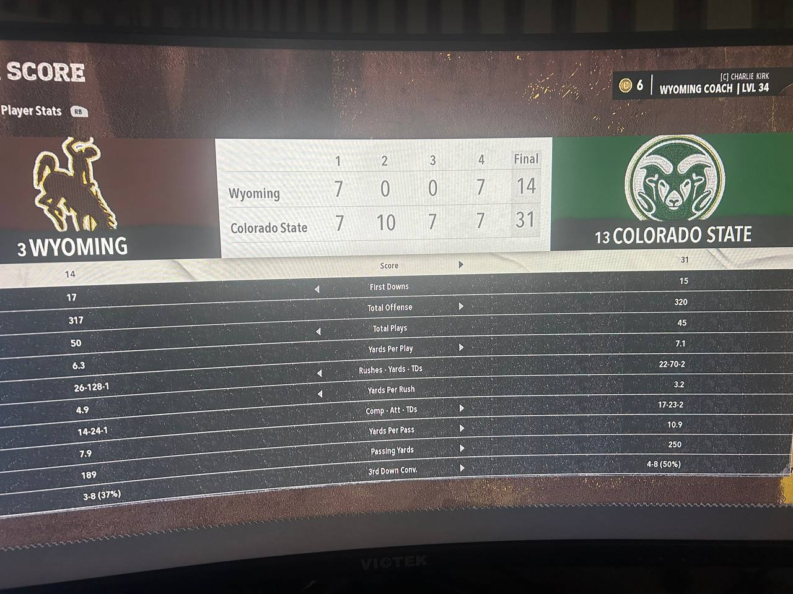

LARAMIE, WY — What was supposed to be a statement game for #3 Wyoming turned into an absolute nightmare as #13 Colorado State rolled into War Memorial Stadium and dismantled Charlie Kirk's Cowboys 31-14 in dominant fashion. But the real fireworks came after the game, when Kirk held what can only be described as the most unhinged, borderline-racist press conference in Mountain West history.
Colorado State QB Julian Dugger was absolutely surgical, completing 17 of 23 passes for 250 yards, 2 touchdowns, and just 1 interception — good for a 185.2 passer rating. His favorite target, L.J. Johnson Jr., torched Wyoming's secondary for 6 receptions, 142 yards, and a touchdown, including a 52-yard bomb that broke the game open. The Rams' offense averaged 7.1 yards per play despite running just 45 plays to Wyoming's 50.
FINAL: #13 Colorado State 31, #3 Wyoming 14
| 1 | 2 | 3 | 4 | Final | |
| Wyoming | 7 | 0 | 0 | 7 | 14 |
| Colorado State | 7 | 10 | 7 | 7 | 31 |
Colorado State Offense:
J. Dugger: 17/23, 250 yds, 2 TD, 1 INT (185.2 rating)
L.J. Johnson Jr.: 6 rec, 142 yds, 1 TD (23.7 avg, long 52)
T. Ball: 16 car, 61 yds, 1 TD | J. Dugger: 2 car, 1 yd rushing
Total: 320 yards, 7.1 YPP
Wyoming Offense:
B. Barnett: 14/24, 189 yds, 1 TD, 2 INT (121.5 rating) — YIKES
T. Mason: 14 car, 69 yds, 1 TD | B. Barnett: 11 car, 44 yds
D. Williams: 4 rec, 102 yds, 1 TD (long 55)
Total: 317 yards, 6.3 YPP
Wyoming went scoreless for the entire second and third quarters. Colorado State outscored them 24-0 in the middle of the game. Blake Barnett threw two interceptions and was sacked three times. The Cowboys' vaunted rushing attack was held to just 128 yards on 26 carries. It was, by all accounts, a complete and total beatdown.
But instead of taking accountability, Kirk directed his rage at the two Colorado State players who embarrassed his defense the most — and things got really uncomfortable.
🎤 Kirk's Post-Game Press Conference (Full Q&A Transcript)
Q: Coach Kirk, Colorado State dominated in all three phases tonight. What went wrong?
"What went wrong? I'll TELL you what went wrong. Julian Dugger and LJ Johnson are LOW IQ THUGS. That's what went wrong. They don't play football — they play STREET BALL. There's no discipline, no respect for the game. They just run around like... like ANIMALS out there. My players? My players are DISCIPLINED. My players are CEREBRAL. But you can't prepare for guys who just — who play like THAT."
Q: Coach, some might say calling opposing players "low IQ thugs" is —
"Is WHAT? It's the TRUTH. Look at Dugger — 250 yards? That's not intelligence, that's just... running around. Any ni— [long pause] ...my PLAYERS are respectful young Black men who play the game the RIGHT way. Dugger and Johnson? They're THUGS. Low IQ. No discipline. That's not racist, that's just FACTS. I have Black players on MY team and they're WONDERFUL. Great guys. Very articulate. Very clean. Not like — look, I'm not gonna get into it."
Q: You mentioned your players are "articulate" and "clean." Can you elaborate on that comparison?
"I'm saying MY guys carry themselves with CLASS. My guys wear belts. My guys speak proper English. My guys don't do that... [waves hands vaguely] ...that STUFF that Dugger does in the end zone. The dancing, the celebrating — it's CLASSLESS. When Darien Williams scored for US, he handed the ball to the ref like a GENTLEMAN. That's what I'm talking about. CULTURE. And our culture at Wyoming is about RESPECT and CONSERVATIVE VALUES. Not whatever... urban... style Colorado State is running over there."
Q: Blake Barnett threw two interceptions and was sacked three times. Do you think the loss falls on his shoulders at all?
"Blake is a WONDERFUL young man. He's a 58% completion rate kind of guy tonight and that's... not his fault. Colorado State was playing DIRTY. Unsportsmanlike, THUG defense. They were hitting him late, hitting him low — it was DISGUSTING. The refs didn't call ANY of it because, frankly, the Mountain West has an AGENDA against conservative programs like Wyoming. Everyone knows it. AIPAC warned me about this."
Q: What about Coach Thad Castle? Reporters on the sideline said he appeared... disoriented during the game.
"Disoriented? He was HIGH. Let's call it what it is. The man REEKED of marijuana. I could smell it from across the field. He was having some kind of EPISODE — I saw him hiding behind the coolers talking about the government. The man thought the FEDS were coming for him mid-game! And he STILL beat me by 17! Which tells you how much those THUG players just do whatever they want! There's no coaching over there — it's just thugs being thugs! Dugger could be coached by a GOLDEN RETRIEVER and still throw for 250 because he just does... that... STREET stuff."
Q: So you're saying Colorado State won despite their coach being impaired?
"I'm saying Thad Castle was crouched behind a Gatorade cooler having a full PANIC ATTACK about government surveillance, smelling like Snoop Dogg's tour bus, and his team STILL won because Julian Dugger and LJ Johnson play with absolutely ZERO regard for the rules or the spirit of the game. They're THUGS. LOW. IQ. THUGS. And I stand by that. Now if you'll excuse me, I need to go pray for Israel."
Q: One more question — LJ Johnson had 142 receiving yards and a 52-yard touchdown. Do you have any respect for that performance?
"Respect? For WHAT? Running fast in a straight line? My neighbor's dog can do that. That's not FOOTBALL IQ. That's just... [catches himself] ...look, some people are just ATHLETIC. That doesn't make them smart. Johnson ran three routes all night — go, go, and go. That's not an OFFENSE, that's a TRACK MEET. When we run our offense, it's SOPHISTICATED. It's INTELLECTUAL. Blake reads defenses. We use SCHEME. Colorado State just throws it up and lets their... athletes... go get it. That's not football. That's PLAYGROUND ball."
The Mountain West Conference has released a statement saying they are "reviewing Coach Kirk's comments" and that "language that could be perceived as racially coded is unacceptable in our conference." Kirk responded to the statement by tweeting a photo of himself with his one Black assistant coach with the caption "How can I be racist? Explain THAT, liberals."
Colorado State improves to a dominant record as the Rams continue to surge under Thad Castle — who, despite apparently thinking the CIA was monitoring him through the stadium speakers during the third quarter, somehow still drew up a game plan that held Wyoming's rushing attack to 4.9 yards per carry and forced two crucial interceptions.
Wyoming falls from #3 and faces serious questions about whether Kirk's increasingly unhinged behavior is becoming a distraction. The Cowboys went scoreless for 30 minutes of football and their coach spent the press conference calling the opposing team's best players racial codewords.
Developing story. CFB Updates will continue to monitor Kirk's comments and any conference disciplinary action.